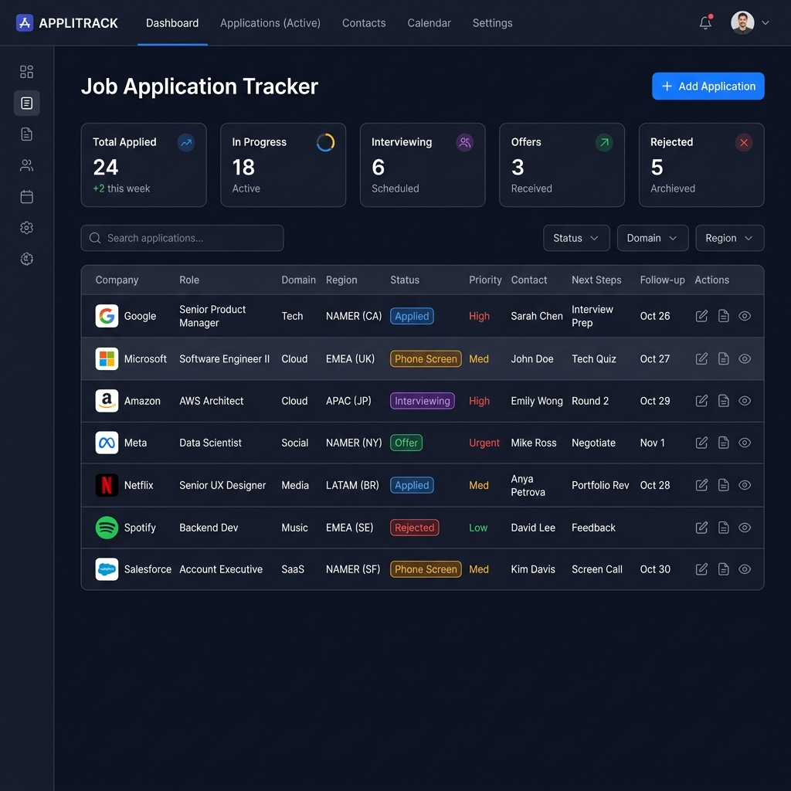

Hi, I'm Karthick Raja
Data Analyst & Power BI Developer with hands-on expertise in Power BI, SQL, and Business Intelligence. Proven track record of optimizing commercial workflows and reducing reporting turnaround time. Based in Dubai, UAE.
About Me
Data Analyst & Power BI Developer.
Data Analyst & Power BI Developer with hands-on expertise in Power BI (DAX, Star Schema, Power Query) and Advanced SQL (CTEs, Window Functions, Data Modeling) to build business intelligence dashboards and reporting solutions.
Proven track record of optimizing commercial quotation workflows, tracking AED 15M+ sales opportunities, and reducing reporting turnaround time by 70%+. Based in Dubai, UAE, and available for immediate joining.
By the Numbers
Key metrics that define my professional journey so far.
Experience
Projects
Analyzed
Dashboards Built
Certifications
Work Experience
Hands-on professional experience in data analytics and business intelligence.
My Technical Skills
Technologies and tools I use to build analytics, BI dashboards, and data-driven solutions.
My Projects
Click on a project to see more details.
Reduced weekly sales reporting time by 12 hours and improved sales conversion by 15% through real-time UAE emirate-level tracking. Built a 5-page Power BI dashboard with KPIs tracking quotation value, win/pending opportunities, win rate, customer performance, product demand, steel volume, and UAE emirate-level activity.
Analyzed $2.3M revenue and $286K profit across 9,994 orders, enabling data-driven decisions that improved customer retention and YTD performance. Designed a Star Schema and developed 20+ DAX measures covering revenue growth, profit margin, average order value, and customer retention.
Identified ₹4.87B in transaction value and 150K+ transactions, enabling the bank to optimize fee structures and reduce high-failure segments by 25%. Built Power Query ETL pipelines and SQL validation workflows using joins, CTEs, aggregations, and window functions.
Analyzed .3M revenue and profit across 9,994 orders, enabling data-driven decisions that improved customer retention and YTD performance. Designed a Star Schema and developed 20+ DAX measures covering revenue growth, profit margin, average order value, and customer retention.
A Power BI dashboard analyzing sales, profitability, customer behavior, and regional performance across retail operations. Features drill-through reports, KPI cards, dynamic filtering, and time-intelligence calculations to support data-driven business decision-making.
An interactive Power BI dashboard designed to monitor and analyze SLA, latency, and failure rates from 100K+ API log records. Features real-time monitoring and incident detection capabilities to improve system reliability.

A comprehensive Data Analytics and Business Intelligence portfolio on GitHub, showcasing Power BI dashboards, SQL analytics, Python-based data processing, ETL workflows, KPI reporting, and interactive BI solutions across Banking, Retail, Customer Analytics, and IoT domains.

A comprehensive portfolio analysis dashboard built entirely in Microsoft Excel — designed to help investors track performance, visualize trends, and make data-backed decisions. Processes 10,000+ rows with advanced formulas and interactive visualizations.

An end-to-end ETL pipeline for 100K+ API log records with automated validation and data quality checks. Achieved 99.5% data consistency and designed dashboards to analyze SLA, latency, and failure rates with real-time monitoring and incident detection capabilities.

A machine learning model using MFCC-based audio feature extraction to identify and classify bird species from audio recordings. Trained on multiple bird species and deployed as an interactive Streamlit web application for real-time predictions.

A production-ready full-stack application that leverages LLMs to analyze resumes for ATS compatibility. It scores resumes against Data Analyst role profiles, extracts critical insights from PDFs, and generates intelligent rewrite suggestions.

A full-stack web application to streamline and manage the entire job search process. Track applications across companies with status updates (Applied, Phone Screen, Interviewing, Offer, Rejected), priority levels, contacts, follow-up dates, and notes — all in one place. Features CSV export, smart filtering by status and region, and a clean dark-mode dashboard UI.
No projects available for this filter.
Professional Certifications
Verified credentials in data analytics, Business Intelligence, and programming.
My Education
B.E. Computer Science Engineering graduate from Hindusthan Institute of Technology, Coimbatore.
Get in touch
Have a project or job opportunity? Feel free to reach out. I'd love to hear from you.
Ready for Data Analyst & Power BI Roles
Open to full-time opportunities in Data Analytics, Business Intelligence, Power BI Development, and Reporting Analytics. Let's build something impactful together!
Send a MessageAll Live Links
Every deployed project — one click away.